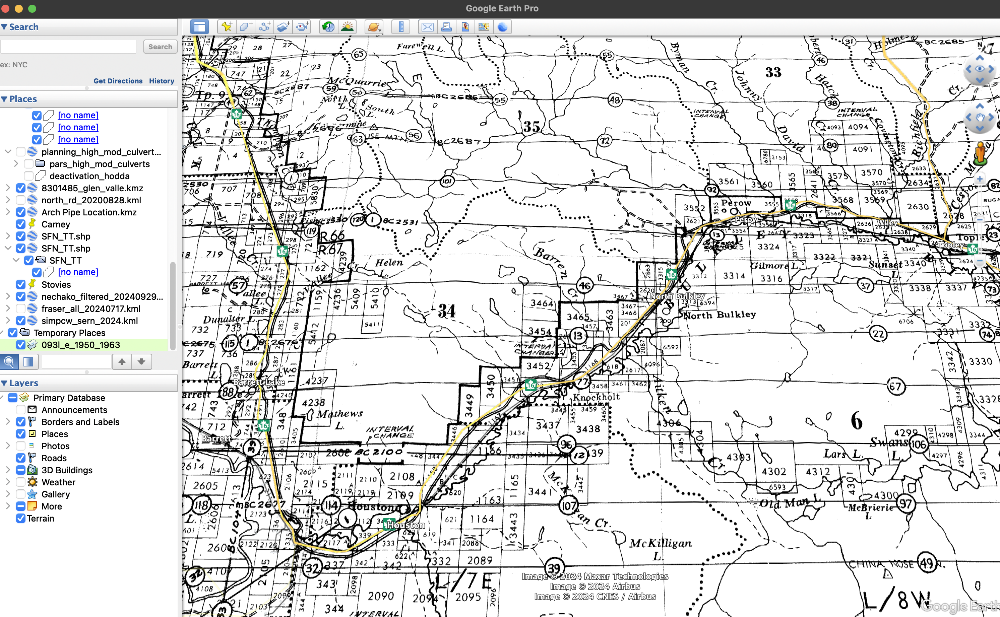
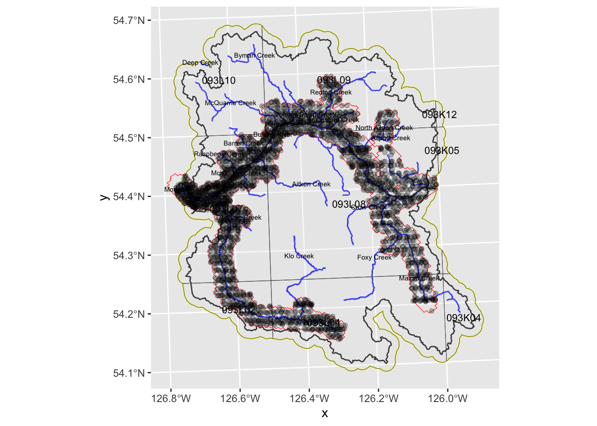

Code
suppressMessages(library(tidyverse))
library(ggplot2)
library(bcdata)
library(fwapgr)
suppressMessages(library(sf))
# library(leaflet)
# library(leafem)```We need some historic ortho photo imagery so that we can have a look at historic watershed conditions compared to current. First thing we’re gonna do is generate a area of interest for which we want all of the map sheets ideas for.
suppressMessages(library(tidyverse))
library(ggplot2)
library(bcdata)
library(fwapgr)
suppressMessages(library(sf))
# library(leaflet)
# library(leafem)```path_post <- fs::path(
here::here(),
"posts",
params$post_name
)staticimports::import(
dir = fs::path(
path_post,
"scripts"
),
outfile = fs::path(
path_post,
"scripts",
"staticimports",
ext = "R"
)
)source(
fs::path(
path_post,
"scripts",
"staticimports",
ext = "R"
)
)# lets build a custom watersehed just for upstream of the confluence of Neexdzii Kwa and Wetzin Kwa
# blueline key
blk <- 360873822
# downstream route measure
drm <- 166030.4
aoi <- fwapgr::fwa_watershed_at_measure(blue_line_key = blk,
downstream_route_measure = drm) |>
sf::st_transform(4326)
#get the bounding box of our aoi
# aoi_bb <- sf::st_bbox(aoi)# grab all the railways
l_rail <- rfp::rfp_bcd_get_data(
bcdata_record_id = "whse_basemapping.gba_railway_tracks_sp"
) |>
sf::st_transform(4326) |>
janitor::clean_names()
# streams in the bulkley and then filter to just keep the big ones
l_streams <- rfp::rfp_bcd_get_data(
bcdata_record_id = "whse_basemapping.fwa_stream_networks_sp",
col_filter = "watershed_group_code",
col_filter_value = "BULK",
# grab a smaller object by including less columns
col_extract = c("linear_feature_id", "stream_order", "gnis_name", "downstream_route_measure", "blue_line_key", "length_metre")
) |>
sf::st_transform(4326) |>
janitor::clean_names() |>
dplyr::filter(stream_order > 4)
# historic orthophotos
# WHSE_IMAGERY_AND_BASE_MAPS.AIMG_HIST_INDEX_MAPS_POLY
#https://catalogue.data.gov.bc.ca/dataset/airborne-imagery-historical-index-map-points
l_imagery <- rfp::rfp_bcd_get_data(
bcdata_record_id = "WHSE_IMAGERY_AND_BASE_MAPS.AIMG_ORTHOPHOTO_TILES_POLY") |>
sf::st_transform(4326) |>
janitor::clean_names()
l_imagery_hist <- rfp::rfp_bcd_get_data(
bcdata_record_id = "WHSE_IMAGERY_AND_BASE_MAPS.AIMG_HIST_INDEX_MAPS_POINT") |>
sf::st_transform(4326) |>
janitor::clean_names()
l_imagery_grid <- rfp::rfp_bcd_get_data(
bcdata_record_id = "WHSE_BASEMAPPING.NTS_50K_GRID") |>
sf::st_transform(4326) |>
janitor::clean_names()# get a list of the objects in our env that start with l_
ls <- ls()[stringr::str_starts(ls(), "l_")]
layers_to_trim <- tibble::lst(
!!!mget(ls)
)
# Function to validate and repair geometries
validate_geometries <- function(layer) {
layer <- sf::st_make_valid(layer)
layer <- layer[sf::st_is_valid(layer), ]
return(layer)
}
# Apply validation to the AOI and layers
aoi <- validate_geometries(aoi)
layers_to_trim <- purrr::map(layers_to_trim, validate_geometries)
# clip them with purrr and sf
layers_trimmed <- purrr::map(
layers_to_trim,
~ sf::st_intersection(.x, aoi)
) OK, so it looks like we cannot get historical air photo information from layers downloaded from BC data catalogue because the majority of the photos are not referenced. It does however seem that if we go through the online interface, we can use a NTS 1 to 50,000 map sheet to export a CSV file that does contain information about individual air photo locations. Our study area is huge so to begin with let’s just have a look at the area from Macquarie Creek up to a boat the location of Talley. For this area we just have 21 to 50,000 map sheets. We can visualize which map she’s those are by downloading that map sheet layer from BC data catalogue overlay it on our general study area.
map <- ggplot() +
# tidyterra::geom_spatraster(
# data = as.factor(land_cover_raster_resampled),
# use_coltab = TRUE,
# maxcell = Inf
# ) +
geom_sf(
data = aoi,
fill = "transparent",
color = "black",
linewidth = .5
) +
geom_sf(
data = layers_trimmed$l_streams,
color = "blue",
size = 1
) +
geom_sf(
data = layers_trimmed$l_rail,
color = "black",
size = 1
) +
# geom_sf(
# data = layers_trimmed$l_imagery_hist,
# color = "red",
# size = 1
# ) +
geom_sf(
data = layers_trimmed$l_imagery_grid,
alpha = 0.25,
) +
geom_sf_text(
data = layers_trimmed$l_imagery_grid,
aes(label = map_tile),
size = 3 # Adjust size of the text labels as needed
)
# ggdark::dark_theme_void()
mapSo looks like we have map sheet 093L09 as well as 0 93L08. Next, we’re gonna go into the provincial WIMSI9 service and manually select our NTS grids, state the date range we would like to search and export. We chose the following options:
It looks like this.
knitr::include_graphics(fs::path(
path_post,
"fig",
"Screenshot1",
ext = "png"
)
)
# knitr::include_graphics("fig/Screenshot 2024-11-15 at 2.03.42 PM.png")Let’s read in what we have, turn into spatial object, trim to overall study area and plot
# list csvs
ls <- fs::dir_ls(
fs::path(
path_post,
"data"),
glob = "*.csv"
)
photos_raw <- ls |>
purrr::map_df(
readr::read_csv
) |>
sf::st_as_sf(
coords = c("Longitude", "Latitude"), crs = 4326
) |>
janitor::clean_names() |>
dplyr::mutate(photo_date = lubridate::mdy(photo_date))
photos_aoi <- sf::st_intersection(photos_raw, aoi)map +
geom_sf(
data = photos_aoi,
alpha = 0.25,
) 
# geom_sf_text(
# data = photos_aoi,
# aes(
# label =
# paste(
# # roll_frame_series,
# frame,
# sep = "-"
# )
# ),
# size = 2 # Adjust size of the text labels as needed
# )buffer <- 3000
drm <- 263795Ok - so let’s say we only want the ones that are within say 3000 of either side of the Bulkley River mainstem.
Let’s grab just the mainstem segments up to the top end of Bulkley Lake, merge, buffer the stream and clip our airphoto list by that.
We can use the downstream_route_measure of the stream layer to exclude areas upstream of Bulkley Lake (also known as Taman Creek). It looks like this in QGIS
knitr::include_graphics(fs::path(
path_post,
"fig",
"Screenshot2",
ext = "png"
)
)aoi_refined_raw <- layers_trimmed$l_streams |>
dplyr::filter(gnis_name == "Bulkley River" & downstream_route_measure < drm) |>
# dplyr::arrange(downstream_route_measure) |>
# calculate when we get to length_m by adding up the length_metre field and filtering out everything up to length_m
# dplyr::filter(cumsum(length_metre) <= length_m) |>
sf::st_union()
aoi_refined_buffered <- sf::st_buffer(
# we need to run st_sf or we get a sp object in a list...
sf::st_sf(
aoi_refined_raw
),
buffer, endCapStyle = "FLAT"
)
photos_aoi_refined <- sf::st_intersection(photos_raw, aoi_refined_buffered)ok lets plot again
map +
geom_sf(
data = photos_aoi_refined,
alpha = 0.25,
) 
Now lets filter by date to see what we can get for the earliest photos possible. What is our range:
range(photos_aoi_refined$photo_date)[1] "1968-05-09" "1980-09-07"What do we have for photos before 1970
map +
geom_sf(
data = photos_aoi_refined |> dplyr::filter(photo_date <= "1969-12-31"),
alpha = 0.25,
) 
Looks like decent coverage so lets go with that.
photos <- photos_aoi_refined |>
dplyr::filter(photo_date <= "1969-12-31")
photos |>
my_dt_table(cols_freeze_left = 2)There are 104 photos. Let’s burn out a csv that can be used to find them.
path_output <- fs::path(
path_post,
"exports",
paste(
"airphotos",
paste(range(photos$photo_date), collapse = "_"),
sep = "_"
),
ext = "csv"
)
photos |>
readr::write_csv(
path_output, na =""
)We can view and download exported csv file here
leaflet::leaflet() |>
leaflet::addTiles() |>
leafem:::addCOG(
url = url
, group = "COG"
, resolution = 512
, autozoom = TRUE
)